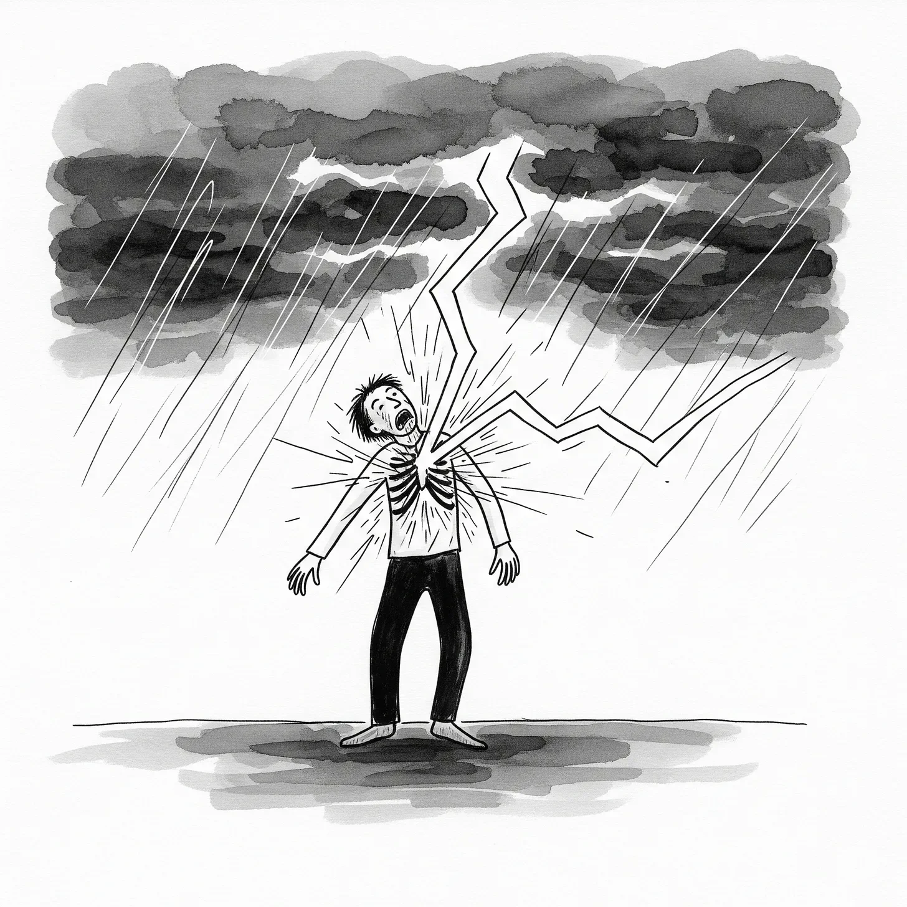

살점이 찢어지는 축축한 포효가 터져 나왔고, 폭풍이 그의 몸속 깊은 곳을 할퀴자 혈관은 잔혹한 즙으로 가득 찬 불어난 시냇물처럼 부풀어 올랐다.
[Flesh tore with a wet, ripping roar, veins bulging like bloated brooks brimming with brutal brew as the storm clawed deeper into his core.]
가뭄에 황폐해져 흙이 혈암처럼 산산이 부서진 들판, 그 위 높은 상공에서 그는 경련했다. 덧없는 수분을 넘어선 무언가를 양식으로 삼는 적란운 포식자의 숙주가 된 그는 갈비뼈 사이로 번개가 휘몰아치는 것을 느꼈다.
[High above the cracked expanse of drought-ravaged fields, where soil splintered like shattered shale, he convulsed. Host to a cumulonimbus predator that fed on far more than fleeting moisture, he felt lightning arc through his ribs.]
그것은 전기가 흐르듯 정확하게 뼈를 박살 냈다. 뼈가 부러지는 소리는 천둥의 울림마저 압도하는 맹렬한 팡파르를 형성했다.
[It splintered bone with electric exactitude, each fracture forming a fierce fanfare of snaps that shadowed the thunder’s thrum.]
피가 빗물과 뒤섞여, 탐욕스러운 심연처럼 쩍 벌어진 상처에서 흘러내렸다. 구름은 그저 이 절묘한 고통을 연장시킬 만큼만 상처를 어설프게 봉합했다.
[Blood blended with rain, dripping from gashes that gaped and gripped like greedy gulfs, the cloud mending merely enough to extend the exquisite agony.]
굶주림으로 흐릿해진 정신 속에서, 농부들은 이 짐승들을 불러들였다. 해골 같은 하늘 아래, 그들은 비에 굶주린 무모한 의식 속에서 증기 같은 침략자들에게 혈관을 갈라 바쳤으니, 불모의 저주를 깨기 위해 피로 맺은 계약이었다.
[In the haze of hunger’s haze, they had beckoned these beasts, farmers chanting under skeletal skies, offering open veins to vaporous invaders in a ritual of rain-starved recklessness, bonds forged in blood to break the barren curse.]
그의 주위로 농지는 해골 같은 황량함 속에서 곪아갔고, 줄기들은 불모의 풍요가 남긴 부서지기 쉬운 뼈처럼 뒤틀려 있었다.
[Around him, the farmland festered in skeletal squalor, stalks skewed into brittle bones of barren bounty.]
근처에서는 다른 이들이 야만적으로 폭주하는 공생 관계 속에서 몸부림쳤다. 한 남자는 피부 밑에서 우박이 망치질을 해대자 비명을 질렀다. 우박은 살을 부풀리며 얼음처럼 분출해 터져 나왔고, 얼어붙은 살점 조각으로 메마른 땅을 후려쳤다.
[Others writhed nearby, their symbioses surging savage: a man shrieked as hailstones hammered beneath his hide, bulging and bursting through flesh in icy eruptions, pelting the parched ground with frozen fragments of flesh.]
공기 중에 아이러니가 스며들었다. 불모를 몰아내기 위해 맺었던 계약이 이제 인간의 심장을 두들기고 있었으니, 창조자와 소비자의 역할이 잔혹하게 뒤엉킨 셈이었다.
[Irony infiltrated the air, these bonds built to banish barrenness now battering human hearts, a chiasmus of creator and consumer cruelly crossed.]
한때 유연하고 날랬던 그녀의 몸은 기압의 무게로 부풀어 올라 사방이 터져나갔다. 배에서 터져 나온 돌풍은 채찍질하는 회오리가 되어 뼈에서 근육을 발라냈고, 치명적인 매질에 찢긴 가을 낙엽처럼 핏빛 구름을 몰아 갈라진 농작물 위를 휩쓸었다.
[Her form, once fluid and fleet, now bloated with barometric burden, split at the seams. Gusts gushed from her gut, flaying muscle from bone in whipping whirlwinds that whipped crimson clouds across the cracked crops, like autumn leaves lacerated by lethal lashes.]
구름들은 피부의 틈새로 스며든 공생의 뱀이었다. 땀과 비밀을 빨아들이며 숙주를 하늘의 원치 않는 선구자로 바꿔버렸다.
[The clouds had slithered in through slits in skin, symbiotic serpents sipping sweat and secrets, turning hosts into heavens’ unwilling harbingers.]
그는 가슴을 할퀴었고, 손가락은 구름이 경계를 부식시켜 연해진 힘줄 속을 헤맸다. 구름은 마치 안개가 아침 이슬을 치명적인 폭우로 녹여버리듯, 내장을 증기 같은 독으로 용해하고 있었다.
[He clawed at his chest, fingers fumbling into softened sinew where the cloud had corroded confines, dissolving organs into vaporous venom like mist melting morning dew into deadly deluge.]
기억이 사나운 환영이 되어 그를 물어뜯었다. 부드러운 암시가 아닌, 날카로운 충격이었다. 소년 시절 싸움판에서 피투성이 된 주먹의 비릿한 쇠 맛, 가뭄이 몰고 온 절망 속에서 으스러뜨린 이웃의 턱뼈 소리 같은 기억들이, 이제는 분노에 불을 지피는 악몽으로 자라나고 있었다.
[Memories mauled him in vicious visions, not soft suggestions but jagged jolts: the metallic tang of bloodied knuckles from boyhood brawls, the crunch of a neighbor’s jaw under drought-driven despair, now nurtured into nightmares fueling the fury.]
살아있는 정반합. 파괴를 통한 권능, 파열을 통한 재생.
[Antithesis alive: empowerment through evisceration, renewal through raw rupture.]
그의 손바닥에서 섬광이 터져 나와 동족 숙주를 덮치며, 피부를 바싹 탄 숯으로 만들었다. 그을린 힘줄에서 풍기는 악취는 공생의 야만적인 대가를 은근히 암시하는 듯, 자비로 위장한 상호 파괴 행위였다.
[A bolt blasted from his palm, striking a sibling host, charring skin to crisped charcoal, the stench of scorched sinew a subtle stand-in for the symbiosis’s savage stake, mutual mayhem masked as mercy.]
마침내 폭력적이고 게걸스러운 폭우가 쏟아져 내장과 뒤섞인 물로 밭고랑을 가득 채웠다. 푸른 새싹들은 탐욕스러운 도굴꾼처럼 그 오물 속을 헤치며 자라났다.
[The downpour descended at last, violent and voracious, flooding furrows with water woven with viscera, green growths groping through the grime like greedy grave-robbers.]
하지만 그 진창 속에서, 연약하고 조심스러운 새싹 하나가 뒤섞인 오물로부터 양분을 빨아들이며 움트고 있었다. 번성할 수도, 스러질 수도 있는, 완전히 버려지지도 온전히 운명 지어지지도 않은 연약한 불꽃이었다.
[Yet amid the muck, a single sprout stirred, tender and tentative, sipping sustenance from the mingled mess, a fragile flicker that might flourish or fade, not wholly forsaken nor firmly fated.]
그는 내장이 폭풍처럼 소용돌이치는 가운데 비틀거렸다. 구름의 갈망은 끝없이 더 많은 균열과 파열을 약속했다. 멀리서 그림자들이 쓰러졌다. 껍데기만 남은 숙주들 위로, 구름은 냉담한 평온 속에 스르르 멀어지며, 그 속삭임으로 폭우의 기만적인 약속에 의심의 씨앗을 심었다.
[He staggered, innards swirling in stormy spirals, the cloud’s craving ceaseless, pledging more rifts, more rends. In the distance, shadows slumped, hosts hollowed to husks, clouds curling away with callous calm, their whispers weaving doubt into the deluge’s deceptive promise.]